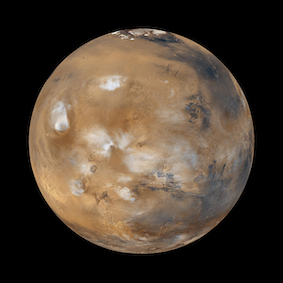

Mars
Der Mars ist im Durchschnitt etwa 70 Millionen Kilometer
weiter von der Sonne entfernt als die Erde. Auf seiner Bahn kommt er der Erde alle 16 Jahre am nächsten
etwa 56 Millionen Kilometer. Im August 2003 näherte sich Mars und Erde bis auf 55 Millionen Kilometer an.
Diese Rekordnähe wird er erst im Jahr 2208 wieder erreichen. |
 |
|---|---|
 |
Die Vision einer Besiedlung des Mars verfolgt derzeit
vornehmlich das US-Unternehmen SpaceX, das hierzu die Entwicklung der vollständig wiederverwendbaren Kombination
aus Trägerrakete und Raumschiff Starship und Super Heavy vorantreibt. Als Ziel für einen ersten unbemannten Marsflug
nannte Elon Musk das Jahr 2024.
|